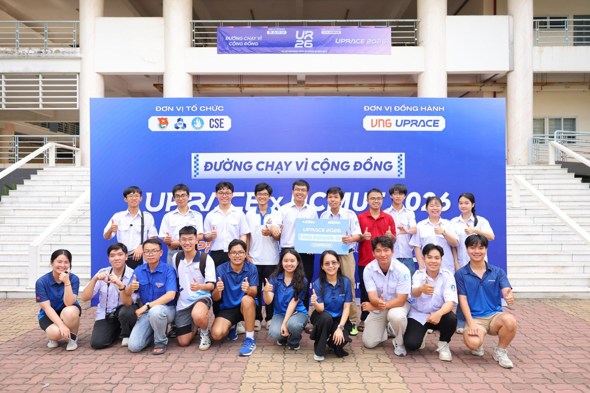
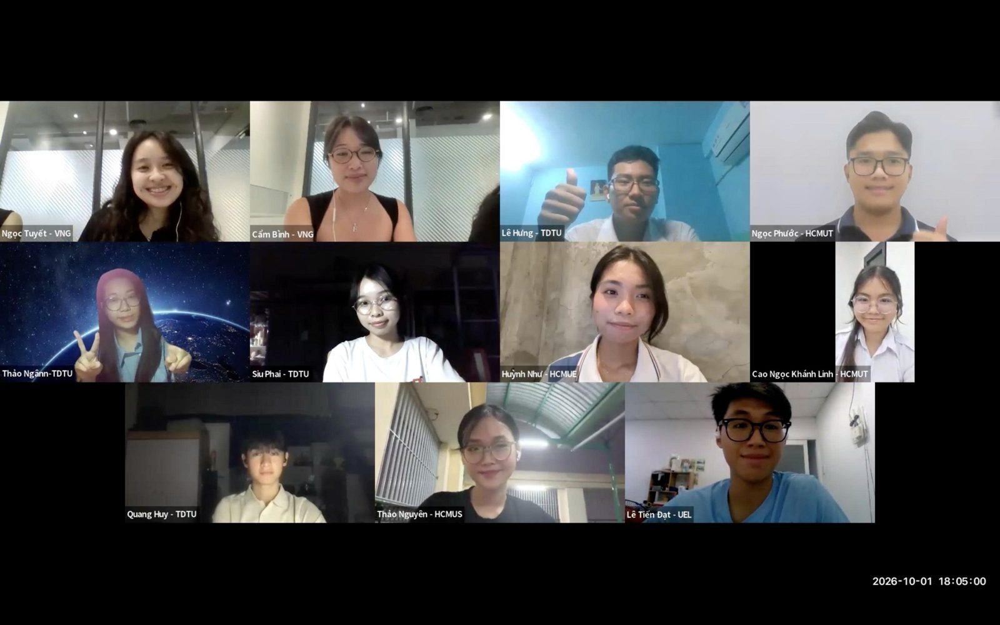
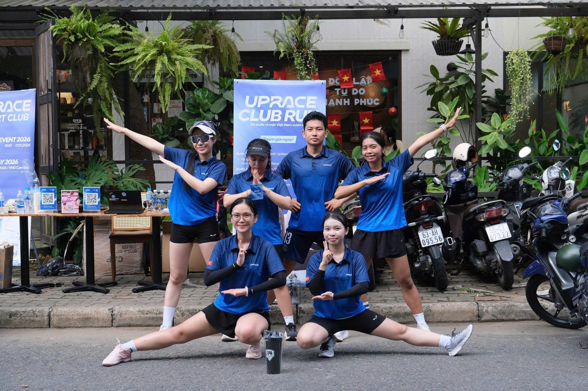
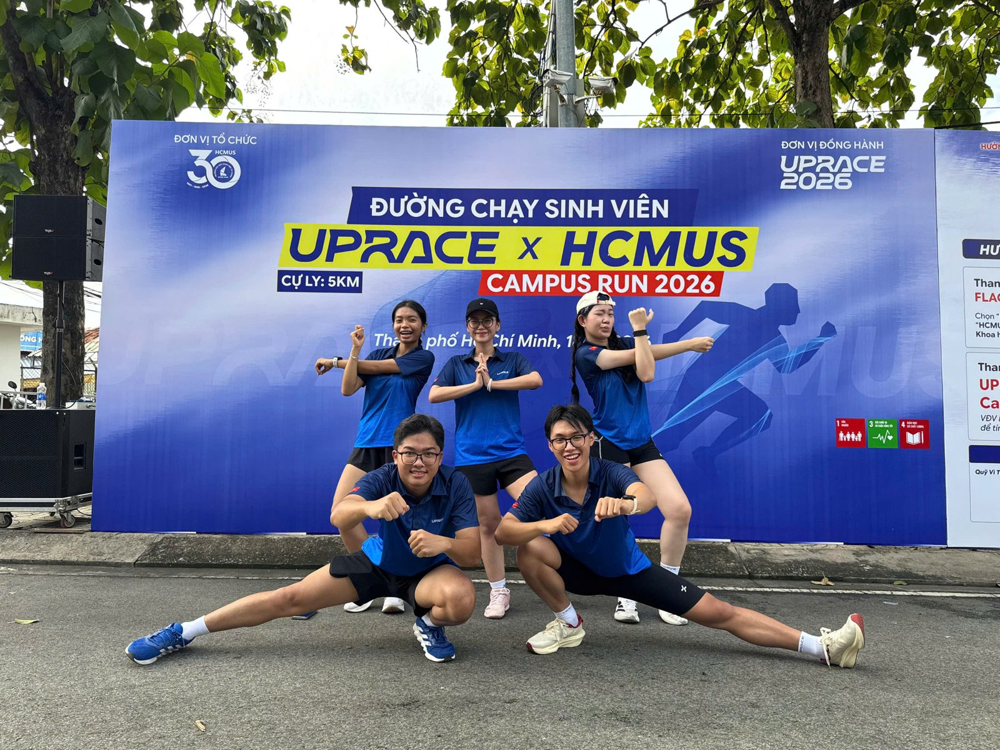
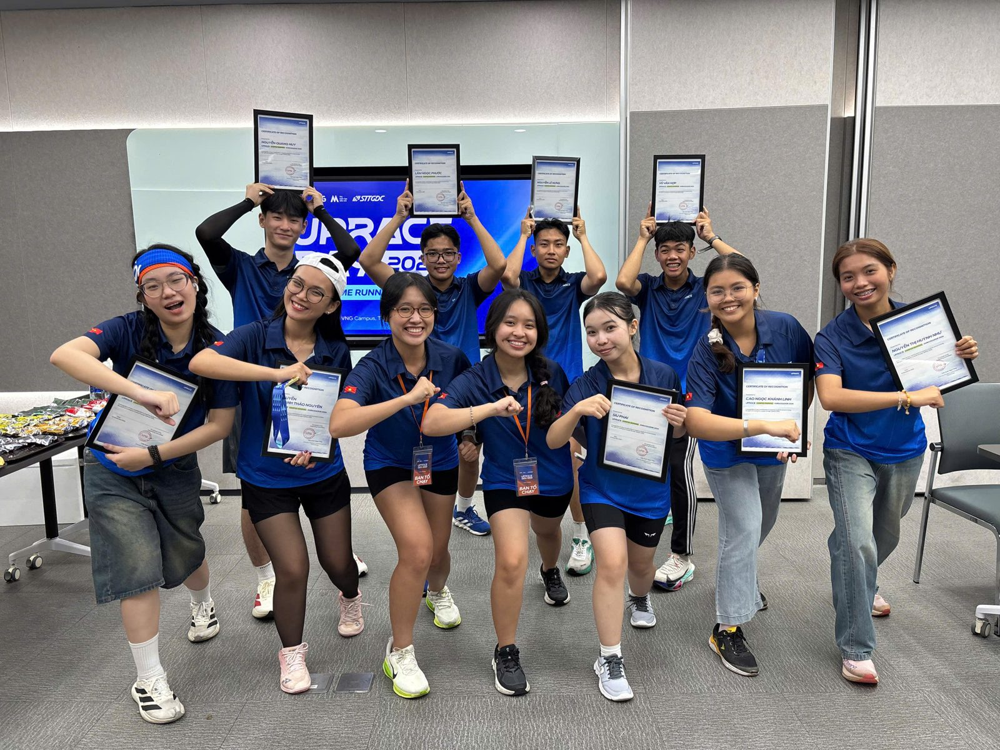

Campus Running Ambassador
Proposed and ran the student ambassador pilot described on this page.
Case study · VNG Group · Initiator & Operations Lead
A pilot I proposed and ran from zero: 10 student runners became UpRace ambassadors on their own campuses.
UpRace is a CSR campaign started by VNG. People log their runs on the UpRace app, and every kilometre is converted into contributions for the community. UpRace 2026 ran from 10 October to 1 November, with events at universities and running clubs, and closed with UpRace Day at VNG Campus.
UpRace's own channels mostly reached people who already knew the campaign, not the students it wanted. Polished brand content could also make running look harder than it is for beginners. My idea was simple: let students hear about UpRace from other students they already follow.
UpRace had never run an ambassador program, so there was no playbook and no budget line to start from.
The ambassador pilot was one of three UpRace workstreams I handled during the campaign.
Proposed and ran the student ambassador pilot described on this page.
Reached out to running clubs and gyms and invited them to join UpRace, contacting 31 of 43 target clubs.
Worked with HCMUT to organize an offline fundraising run on campus, “Running for the Community”.

images/uprace-hcmut.jpg
images/uprace-3.jpg
images/uprace-1.jpg
images/uprace-2.jpg
images/uprace-4.jpgThere was no playbook, roster or budget line. I learned to turn a gap I noticed into a proposal, a scope and a working program.
Program & project managementI picked ambassadors for relevance, authenticity and willingness, not follower count, and that choice held up through the campaign.
Recruiting & people experienceAmbassadors were volunteers with no contract. Being clear, quick to reply and supportive is what kept all 10 committed.
Partner & stakeholder managementIn the same weeks, I also ran two other UpRace workstreams, plus Code Tour 2026 and back-to-school sponsorship contracts.
Operations & prioritization